|
 | Hm. Különös
dolgokat mûvel a Mac-em. Ghostmissing véletlenül lenyomta az elosztót, és amióta újból elindult,
eszeveszett hangosan zúg benne a ventillátor, bootolásnál beugat, hogy nem tudja olvasni a lemezt
(pedig nincs is bent semmi), és a Vodafone modem is meghalt, bár az rendszeresen szokott,
tudniillik a Vodafone sohasem gondolta komolyan, hogy PC-n kívül másra is megengedjék rádugni a
szutyok koreai modemjüket, és egy meglehetõsen dirty hack életre kelteni Macen. Szóval most zúg,
mint a Volga, vagyis inkább mint egy hajszárító, és természetesen ilyet még senki sem látott, ez a
szép a Mac-ben, sose romlik el, de ha igen, akkor mindegyik másképp. Polcom elkészültét a
lakás rendbetételével próbáltam megünnepelni, de az elmúlt két nap alatt sem sikerült
befejezni. Nem is hittem volna, hogy például ilyen mennyiségû CD-t írtam a kilencvenes évek
során. Persze a nagy része már mehet a levesbe, régi vindózos szoftverek (fujj), csak a demók,
az MP3-ak és hasonlók kellenek, azok meg elférnek 4-5 DVD-n. A könyvek már mind a helyükön
vannak, múzeummal felérõ retrógép-kiállításom is biztonságos szekrényekben pihen (láttatok már
BBC Electront vagy Oric Atmost, bimbulák?), most már csak néhány akadály meredez a szoba
közepén, ide értve _Neo-t, aki rácuppant az 1988-ban kiadott Zsidóviccek címû könyvemre. Jó is, talán leszokik a szóviccekrõl. A
ládák mélyérõl jónéhány régi relikvia is elõkerült, életem olyan szakaszaiból, amelyekre már
nem is emlékszem, például tizenéves koromból, vagy még annál is régebbrõl. Rengeteg kacat gyûlik
össze egy ember életében, amikhez nem is tudni, miért ragaszkodik. Mi értelme egy harminc évvel
ezelõtti dunakanyari kiránduláson megvett porcelánnyúlnak, egy fröccsöntött krokodilnak vagy egy
Lillafüred feliratú porcelánkorsónak (igazából köcsög, de ilyet
nem mondunk), ami túl kicsi ahhoz, hogy haszna legyen, de még a nagyi hozta (egy lillafüredi
bóvliárustól), ezért generációkon át nem merte senki kihajítani... De. Vesszen a
szentimentalizmus. Sújtson késõbbi generációk haragja, de a korsó repült. Majd elmegyünk
Lillafüredre másikért az én unokámmal, ha lesz. S biztos õ is ugyanilyen tanácstalan fejjel fog
állni a most kidobott korsó szakasztott mása fölött nyolcvan év múlva. Erõs legyél, drága vérem,
hajítsd ki te is, ahogy a nagypapa tette! A giccses svájci porcelántehénrõl, amely egyben
sószóró, nem is beszélve. Hiszen az nyugati! Azaz még annál is nyugatibb, svájci! Non plusz ultra,
mint a Bécsbõl hozott Toblerone csoki. Azt is utálta mindenki, de kötelezõ volt. Ó,
naiv nyolcvanas évek. Amikor még a sörösdobozokat is gyûjtöttük. (Nekem is volt egy rakás a
szekrény tetején. Akkoriban még pénzért is lehetett adni-venni õket...) Azért megmutatok nektek
néhány relikviát, ami túlélte a tizedelést. A polc
készen - bár még kicsit zsúfolt, és nincs a helyén az íróasztal lapja sem (középen lesz, a lámpa
alatt)A
relikviák egyike: a FLaG '96 demóparty polója. Gaf tervezte. Nos, igen, voltak jobb partypolók is,
de mi lamerek voltunk. Igen, tudom, a hajam vicces.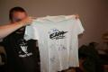Ez egy
Edda-poló. Dedikált, igen. Májer, mi? (Lehet, hogy nem, de 1993-ban az volt.) A
Controlled Dreams, elsõ demócsapatom polója. A grafikát Worf rajzolta. Az
igazi Edda-poló fekete volt, és fekete kendõt volt szokás viselni hozzá. Meg bakancsot,
természetesen. Az
igazi Edda-poló fekete volt, és fekete kendõt volt szokás viselni hozzá. Meg bakancsot,
természetesen. Egy
rakás Hahota. Eredetiek, igen. Majd bescanneljük.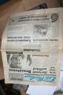Egy
1994-es Esti Hírlap.Ebben
a számban jelent meg elõször a "tomcat" név egy cikk alatt. Yay!Egy
harmincas évekbeli fotóbox, és egy ma is tökéletesen mûködõképes Praktiflex tüköraknás gép, amelyet
egykor a Rczepospolita címû lengyel lap munkatársa használt. Legalábbis valami ilyesmi van
belegravírozva. Akkoriban olyasmi volt ez a gép, mint ma egy Canon EOS 5D.Egy
exponált, de soha elõ nem hívott film gyerekkoromból. Mi lehet rajta? Hétfõn elviszem elõhívatni.
Megtaláltam egy másikat is, egy negatívot, amelyen egy 1987-es kommunista ünnepség képei
láthatóak, tokás párttitkárral, fejét felszegve büszkén a mikrofonba szavaló úttörõvel, és a
"legendás páncélvonat" papírmasé makettjével.Petróleumlámpa. Kölyökkoromban nagyon vonzódtam a régi dolgokhoz. Ezt az
Ecserin vettem 80 forintért, ha jól emlékszem, 1988-ban.Ez
pedig egy ingaóra. Karácsonyi ajándék volt 1988 körül. Mert az órákat is szerettem. A
mechanikusakat. Egyébként ma is szeretem, de ne hozzatok, mert nem fér el jó lesz a marcipán is.
:)Egy
volt barátnõm üvegmûves volt. Azóta férjhez ment. Nagyon kedves kis üvegfigurák maradtak utána,
mint ez a hattyú, a hóember, vagy egy aranyozott fülû malac, ami még elcsomagolva rejlik
valahol.Az
elsõ képen felfedezhetõ ez a palack a polcon. Csillebérci Jubileum, 1948-1988. Épp '88-ban
nyaraltam ugyanis a csillebérci úttörõtáborban, akkor osztogattak ott ilyet, benne két deciliter
ismeretlen összetételû narancsízû, szénsavas üdítõitallal.Quick
Shot II Turbo joystick. Aki tudja, érti. Igen, az autofire gomb hiányzik, de van két ép példányom
is.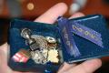Szalagavatós szalag. Egy kitûzõ a májer rockerdzsekimrõl. Luther-tû
konfirmálásom napjáról. Egy kis, kézzel pingált koronás címer, egy apró réz Szent Koronából, amit
apám hozott, mert ilyeneket gyártottak éppen a Pénzverõben. Gyerekkori nyakláncom.Az
Enterprise-t Kesigomutól kaptam. A Plusi egy volt katonatársamtól jött. A lemezek tele vannak
játékkal, de megtaláltam az MMC64-esemet is, amivel MMC kártyát lehet beolvastatni a Commodore
64-essel. Hack!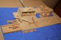Na,
hát ilyeneket farigcsál egy 11 éves fiú, aki nyilvánvalóan fegyverbuzinak született, és az apja
nem vette el tõle idõben a pince kulcsát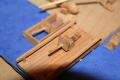Ágyúk.
Fedezék csak az egyiknek jutott.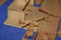Helikopter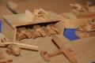Tankból három is kellhet. Azokat betesszük a hangárba, mert a repülõ úgyse
férne be. A gépágyút meg védjük meg az oldalról jövõ támadásoktól.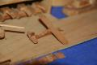Repülõ. Futómû nincs.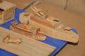Nagy
és kis hajó. Eredetileg csak kicsi volt, de keveselltem a tûzerõt.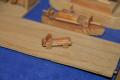A
teherautó hasznos, ha mondjuk menekülni kell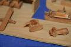Tank a
szabadban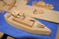 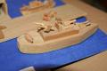Rakétanaszád elölrõl és hátulról. A radar biztos jól látja a rakéták végét és
az ágyút elõtte.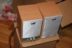 Két
aktív hangfal. Ezek nem régiek, sõt. Nemrég még a boltban voltak. Most gondolkodom, hogy eladjam
vagy használjam-e õket. Egy
rakás Hahota. Eredetiek, igen. Majd bescanneljük.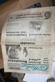Egy
1994-es Esti Hírlap.Ebben
a számban jelent meg elõször a "tomcat" név egy cikk alatt. Yay!Egy
harmincas évekbeli fotóbox, és egy ma is tökéletesen mûködõképes Praktiflex tüköraknás gép, amelyet
egykor a Rczepospolita címû lengyel lap munkatársa használt. Legalábbis valami ilyesmi van
belegravírozva. Akkoriban olyasmi volt ez a gép, mint ma egy Canon EOS 5D.Egy
exponált, de soha elõ nem hívott film gyerekkoromból. Mi lehet rajta? Hétfõn elviszem elõhívatni.
Megtaláltam egy másikat is, egy negatívot, amelyen egy 1987-es kommunista ünnepség képei
láthatóak, tokás párttitkárral, fejét felszegve büszkén a mikrofonba szavaló úttörõvel, és a
"legendás páncélvonat" papírmasé makettjével.Petróleumlámpa. Kölyökkoromban nagyon vonzódtam a régi dolgokhoz. Ezt az
Ecserin vettem 80 forintért, ha jól emlékszem, 1988-ban.Ez
pedig egy ingaóra. Karácsonyi ajándék volt 1988 körül. Mert az órákat is szerettem. A
mechanikusakat. Egyébként ma is szeretem, de ne hozzatok, mert nem fér el jó lesz a marcipán is.
:)Egy
volt barátnõm üvegmûves volt. Azóta férjhez ment. Nagyon kedves kis üvegfigurák maradtak utána,
mint ez a hattyú, a hóember, vagy egy aranyozott fülû malac, ami még elcsomagolva rejlik
valahol.Az
elsõ képen felfedezhetõ ez a palack a polcon. Csillebérci Jubileum, 1948-1988. Épp '88-ban
nyaraltam ugyanis a csillebérci úttörõtáborban, akkor osztogattak ott ilyet, benne két deciliter
ismeretlen összetételû narancsízû, szénsavas üdítõitallal.Quick
Shot II Turbo joystick. Aki tudja, érti. Igen, az autofire gomb hiányzik, de van két ép példányom
is.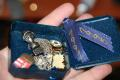Szalagavatós szalag. Egy kitûzõ a májer rockerdzsekimrõl. Luther-tû
konfirmálásom napjáról. Egy kis, kézzel pingált koronás címer, egy apró réz Szent Koronából, amit
apám hozott, mert ilyeneket gyártottak éppen a Pénzverõben. Gyerekkori nyakláncom.Az
Enterprise-t Kesigomutól kaptam. A Plusi egy volt katonatársamtól jött. A lemezek tele vannak
játékkal, de megtaláltam az MMC64-esemet is, amivel MMC kártyát lehet beolvastatni a Commodore
64-essel. Hack!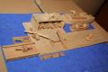Na,
hát ilyeneket farigcsál egy 11 éves fiú, aki nyilvánvalóan fegyverbuzinak született, és az apja
nem vette el tõle idõben a pince kulcsát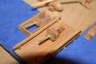Ágyúk.
Fedezék csak az egyiknek jutott.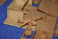Helikopter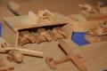Tankból három is kellhet. Azokat betesszük a hangárba, mert a repülõ úgyse
férne be. A gépágyút meg védjük meg az oldalról jövõ támadásoktól.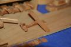Repülõ. Futómû nincs.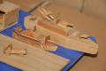Nagy
és kis hajó. Eredetileg csak kicsi volt, de keveselltem a tûzerõt.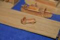A
teherautó hasznos, ha mondjuk menekülni kell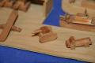Tank a
szabadban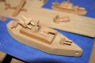 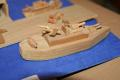Rakétanaszád elölrõl és hátulról. A radar biztos jól látja a rakéták végét és
az ágyút elõtte.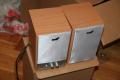 Két
aktív hangfal. Ezek nem régiek, sõt. Nemrég még a boltban voltak. Most gondolkodom, hogy eladjam
vagy használjam-e õket. A lakásavatót csoportos fõzéssel ünnepeltük mindannyian,
akik a költözésben és a polc megépítésében részt vettünk. Receptek egy késõbbi posztban. Most
képek. Eper-alma csatni, csicseriborsó, felaprított spenót, pár szem lime és a
szakácskönyv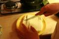Ilyen
a házi sajt, ha rendesen csináljákEz meg
egy elektroncsõ. BiG újította valahonnan, egykor egy szovjet katonai rádióállomásban izzott.
Tesla-tekercs lesz belõle, kóbor macskák elriasztására. Radikális, de hatékony
eszköz.Készül
a szabdzsi, elöl az aranybarnára sült sajt És
kész is van! Az ott Levente keze.Haribol-golyók. Ghostmissing szerint ezzel meg lehet dönteni egy birodalmat.
És tényleg.Ghostmissing Dr. House-t imitál, nyakában a vízipipa csövével És
kész is van! Az ott Levente keze.Haribol-golyók. Ghostmissing szerint ezzel meg lehet dönteni egy birodalmat.
És tényleg.Ghostmissing Dr. House-t imitál, nyakában a vízipipa csövévelMegettünk, megittunk mindent, és most nekünk jó. Nektek meg jó
éjszakát.
___________________ (Most nézem csak, a Kuruc.infó
megint nem tud mit kezdeni magával, és éppen azt hazudják, hogy Dr. Gaudi-Nagy Tamás
"megérdemelten ejtett" engem, vagyis, gondolom, ez azt jelenti, hogy nem áll velem szóba. Ennek
kissé ellentmond, hogy a héten jártam nála, a Nemzeti Jogvédõ Alapítvány ugyanis támogatja a Clark
Ádám téri pertársaság ügyét, és személyes kártérítési ügyeimet is a segítségükkel bonyolítom. Melnyikov, Melnyikov, sokba fog kerülni neked
ez a hazudozás, egy kicsit abbahagyhatnád, mert nem gyõzöm bõvíteni a keresetet ellened. Arról
mesélj inkább, hol az a sok millió forint, amit
adományba kikuncsorogtál az olvasóidtól. Errõl gyanúsan hallgatsz, pedig annyira szereted
"cáfolni", amit leírok.) | | vissza a fõoldalra |  |
| 1 2 3 4 5 6 | |  | | | | | | | | | | | | | | | | | | | | 1 2 3 4 5 6 | |
|


túraszervezõ
túra-rss
mi ez?

legjobbak
legolvasottabbak
tartalomjegyzék
rss feed

AboryM
Caesar
Count Grishnackh
cscsabi
eürdüngh
Feki
GyalogKakukk
Ishukone
Kadzseszka
LACI1993
Mini
Muska
Rommel
Segi
Takezó
tommylee
vikcee
|